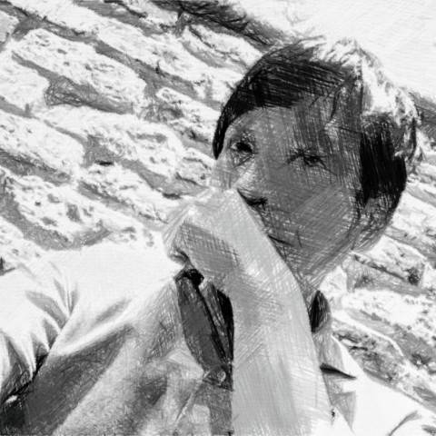
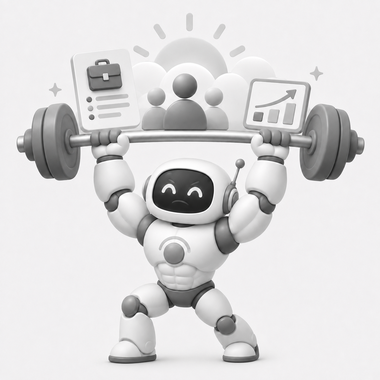

案件配信文作成
約2時間20分/ 月 削減
- Before → After
- 10分 → 3分
- 削減率
- 約70%
- 月間実施回数
- 20 件 / 月
01 Impact
定型業務にかかる時間をAIで削減し、営業がより価値の高い仕事に時間を使えるように。
案件配信文作成
議事録作成
人材×案件マッチング・提案支援
AI支援 スキルシート解析 → 案件検索 → 候補抽出 → 提案メール生成
人が最終判断 適合判断 → 提案可否 → 送信（自動送信はしません）
既存のAIツール・Claude Code等を組み合わせた運用フローで対応。月40件は「人材起点／案件起点」の双方を含みます。
※ Before / After と月間実施回数をもとに算出した実務ベースの概算値です。
02 Practice
売上実績・計画比較や営業会議資料、社内説明資料などの構成整理・表現調整にAIを使っています。Excelや元データをもとに、経営者や営業メンバーが理解しやすい資料へ整えています。
顧客の課題や案件内容を整理し、提案の構成や伝え方を考える際にAIを使っています。専門的な内容を相手に合わせて整理し、提案のポイントを明確にするのに活用しています。
取引先やBPに送る案件メールをAIで整理しています。煩雑で読みにくい案件情報や専門的な表現を、相手に伝わりやすいメールに整えています。
エンジニアのスキルシート解析 → 案件メール検索 → 候補案件の抽出 → 提案メールのドラフト生成までをAIで支援しています。案件適合性の最終判断・提案可否・送信は、営業担当者が行います（自動送信はしません）。
提案後の面談に向けて、確認すべき経験・質問項目・想定される懸念点をAIで整理しています。マッチング段階ではなく、面談当日に強み・不足点・確認事項をスムーズに話せるよう準備するのに活用しています。
営業会議の内容をAIで議事録にしています。決定事項や対応事項を整理し、あとから確認・共有しやすい形にしています。
売上実績・稼働人数・計画との差異などの集計・比較表の作成にAIを使っています。計算式や表示ルール、グラフ、色分けを整理し、営業管理に使いやすい形へ整えています。
営業会議の議事録や日々の業務記録を、Claude Codeで整理しています。情報を保存するだけでなく、次の営業活動に使えるナレッジとして蓄積しています。
03 Sales AI Lab
営業現場で試し、測り、育てるAIエージェント支援。営業のAI化診断から、エージェントの設計・導入、運用改善の伴走までを提供します。
営業フローを整理し、AIに任せる業務と、人が判断する業務を切り分けます。
ChatGPT・Claude Code等を活用し、営業現場に合わせたAIエージェントを設計・導入します。
プロンプト・ルール・ナレッジ・KPIを改善しながら、現場で使えるAIエージェントに育てます。
営業を知っているから、現場で使えるAIエージェントを設計できる。
※ 自社の営業現場で実践している方法をベースに、現場に合わせて設計・導入します。
04 About

中小IT企業で、IT事業の営業部門を統括している山内 康敏です。 案件開拓から要員マッチング、スキルシート管理、提案、BP（ビジネスパートナー）管理、 クロージングまで——IT営業の一連の現場を、20年、実務で回してきました。
強み
IT営業の全工程を、当事者として実務で回してきたこと。その同じ現場に、いま自分で生成AI・AIエージェントを入れています。営業とAI実装が、一人の中でつながっています。
実績
IT営業歴20年。いまは営業部門全体を統括し、メンバーのマネジメントと営業組織の運営も担当しています。
自社の営業現場で実践する当事者として、現場で使えるAI活用を形にしています。
世界観
特別なDX部門がなくても、営業の当事者がAIで現場を変えられる——それを、自分の営業で一つずつ確かめています。
机上のコンサルではなく、売る現場から。ここで確かめたことを、同じ課題を持つ中小IT企業の営業現場に還元していきたい。IT営業の現場に、少しずつ新しい朝が来るように。
05 Tools
案件配信・提案・マッチング・面談準備・集計・ナレッジ管理まで、日々の営業活動を幅広く支援。現在実践しているAI活用を、ひとつの営業支援パッケージとして展開します。

AIがお支えします！
Practiceで紹介している8つの営業業務を横断し、ひとつのパッケージとしてまとめて支援する導入予定のツールです。実践中のAI運用をベースに、現場に合わせて設計・展開します。
※ 自動送信は前提としません。